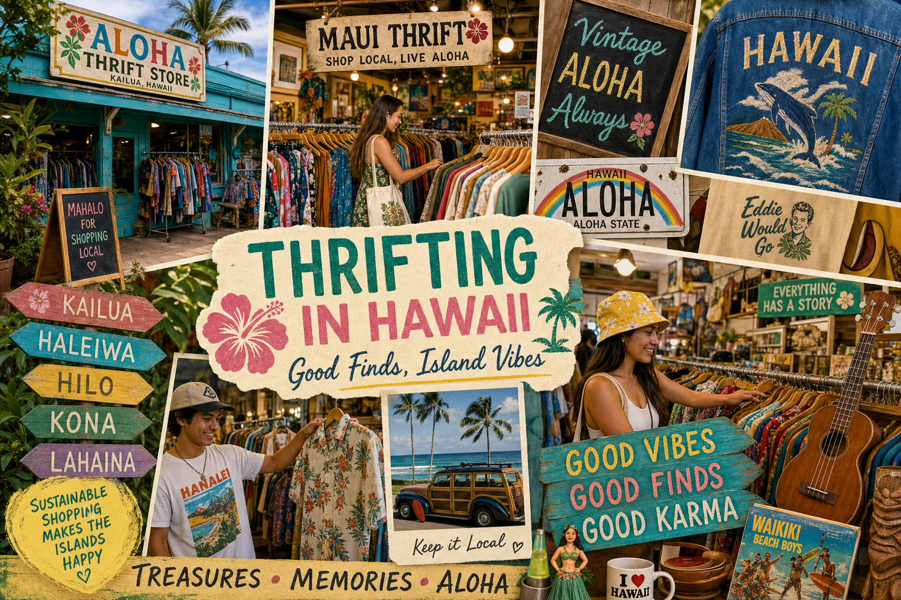

Hawaii has a surprisingly rich secondhand shopping culture. The combination of a large tourism economy (which generates constant turnover in consumer goods), a strong local culture of gifting and sharing, and the practical necessity of creative reuse on isolated islands makes Hawaii's thrift scene genuinely excellent. Here's our honest guide to the best shops across the islands.
Oahu
Oahu has the state's largest concentration of thrift stores by volume. The Salvation Army on Kapahulu Avenue in Honolulu is a perennial favorite for clothing and housewares. Goodwill stores in Kaimuki and Aina Haina have large selections. For vintage and curated finds, check out The Retro Closet in Chinatown and Bishop Museum's estate sales (check their website for dates — these sell extraordinary historical items). The Honolulu flea market at Aloha Stadium (Wednesday, Saturday, Sunday) is a massive outdoor market with hundreds of vendors including excellent vintage dealers.
Maui
Maui has a growing thrift scene. Consignment Closet in Kahului has well-priced clothing and accessories. The Maui Upcountry area (Makawao, Paia) has charming vintage boutiques with a Bohemian island aesthetic that's distinctive and beautiful. The annual Maui Made marketplace features local artisans selling new and upcycled island goods.
Kauai
We're biased, of course, but Kauai's thrift scene is special. Beyond Second Wave in Hanapepe, there's the Goodwill in Lihue, Salvation Army stores in Lihue and Kapaa, and several consignment shops in Kapaa Town. The community yard sales in neighborhoods like Puhi and Waimea often surface incredible finds from multigenerational island families clearing out estates.
Big Island
The Big Island's thrift scene is spread across a large geographic area. Hilo has the best concentration — the Goodwill near the bayfront and the Salvation Army on Kilauea Avenue are both worthwhile. The Pahoa area, with its alternative community culture, has excellent vintage clothing. Kona's thrift stores tend toward resort wear and water sports equipment donated by visitors.